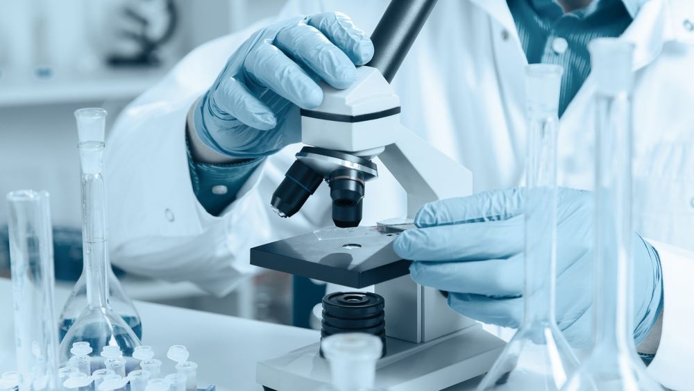
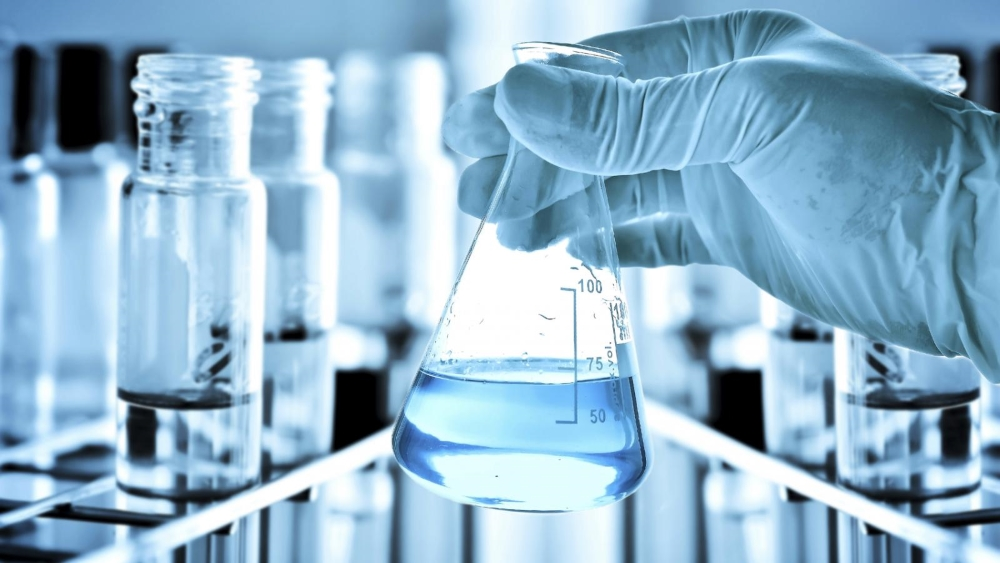
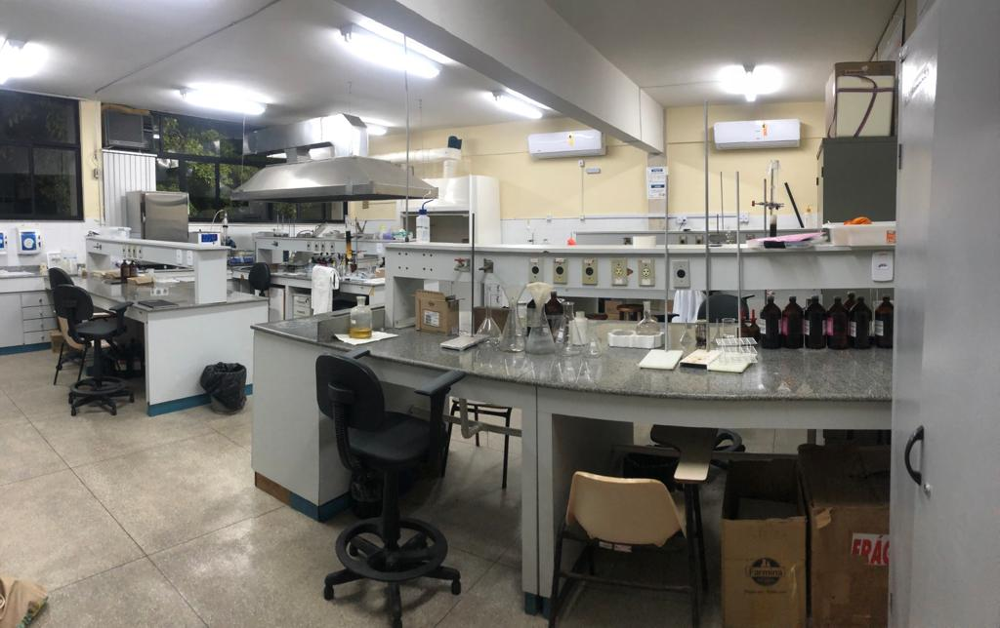

Conheça nossa infraestrutura e instalações
O LABQUIM possui infraestrutura laboratorial voltada às atividades experimentais, acadêmicas e científicas da área de Química, oferecendo suporte às atividades de ensino, pesquisa e extensão da Universidade Estadual de Feira de Santana (UEFS).



O ambiente laboratorial é estruturado para realização de análises químicas, preparo de amostras, atividades experimentais e desenvolvimento de pesquisas científicas. Entre os principais equipamentos e recursos laboratoriais estão:
O LabQuim é organizado em bancadas e áreas funcionais que permitem o desenvolvimento simultâneo de diferentes projetos de pesquisa, assegurando condições adequadas de segurança, armazenamento e manipulação de reagentes e amostras.
Área dedicada a extrações, purificações e reações químicas com vidraria e reagentes analíticos grau P.A.
Espaço dedicado aos equipamentos analíticos como FTIR, polarímetro e leitor de microplacas.
Sistema ELGA para produção de água ultrapura (Tipo 1 e 2), essencial para análises de traços e preparo de soluções padrão.
Câmaras frias e freezers para conservação de amostras biológicas, extratos e padrões analíticos sensíveis à temperatura.
Cabine de exaustão, EPIs, descarte seletivo de resíduos e fichas FISPQ disponíveis para todos os reagentes utilizados.
Computadores com softwares especializados (Origin, ChemDraw, MestReNova, Matlab, R) para análise e interpretação de resultados.
O LabQuim está localizado no campus da UEFS, em Feira de Santana — BA.
Universidade Estadual de Feira de Santana
Módulo de Ciências Exatas
Av. Transnordestina, s/n — Novo Horizonte
CEP 44036-900 — Feira de Santana, BA
Tel.: (75) 3161-8086